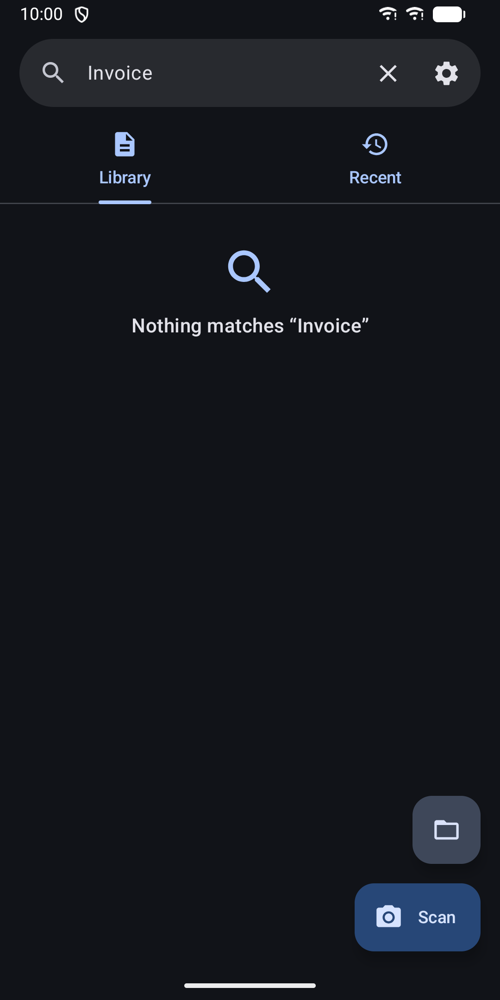

PDF-Reader & Scanner
PDFs auf dem Handy lesen, durchsuchen, scannen und unterschreiben.




Über die App
Ein schneller, privater PDF-Reader und Dokumentenscanner. Er funktioniert ohne Verbindung, zeigt keine Werbung und hat keine Internetberechtigung. Deine Dateien verlassen das Handy nur, wenn du sie selbst teilst oder exportierst. PDFS LESEN • PDFs vom Handy, aus Cloud-Apps oder über „Öffnen mit“ öffnen. Kein Zugriff auf alle Dateien nötig. • Flüssiges vertikales Scrollen in voller Breite, auf Handy und Tablet. • Macht dort weiter, wo du aufgehört hast. • Inhaltsverzeichnis für PDFs, die eines haben. • Textsuche in PDFs mit Textebene. • Nachtseiten: Seitenfarben umkehren, um im Dunkeln zu lesen. Die App selbst folgt deiner hellen oder dunklen Systemeinstellung. • Passwortgeschützte PDFs ab Android 15. • Liste der zuletzt geöffneten Dateien, jederzeit löschbar. DOKUMENTE SCANNEN • Kantenerkennung und Zuschnitt mit dem Dokumentenscanner von Google ML Kit. • Unbegrenzt scannen, ohne Wasserzeichen. • Scans werden als PDF in einer privaten Bibliothek auf deinem Handy gespeichert. • Scans durchsuchen, sortieren und umbenennen, mit Seitenvorschau. • Seiten eines gespeicherten Scans hinzufügen und löschen. • In einen beliebigen Ordner exportieren oder als PDF teilen. PRO: EINMALKAUF • Durchsuchbare Scans: Die Texterkennung läuft nach jedem Scan auf deinem Handy und funktioniert auch bei reinen Bild-PDFs. • Text markieren mit normalen PDF-Markierungen, die auch andere Reader anzeigen. • Dokumente mit einer gezeichneten Unterschrift unterschreiben. Die Unterschrift wird mit einem Schlüssel verschlüsselt, der das Handy nie verlässt. • Änderungen werden als Kopie in deiner Bibliothek gespeichert. Die Originaldatei bleibt unverändert. • Kein Abo, keine Testphase, kein Konto. PRIVAT VON GRUND AUF • Keine Internetberechtigung. Nichts wird hochgeladen, nichts wird getrackt. • Kein Konto, keine Analyse-Tools. • Die Bibliothek ist von Backups ausgeschlossen. • Keine Werbung. WIDGET FÜR DEN STARTBILDSCHIRM Deine letzten drei Scans oder geöffneten PDFs und ein Scan-Button mit einem Tipp. Verfügbar auf Deutsch, Englisch und Spanisch. Scannen und Pro brauchen die Google Play-Dienste. Lesen funktioniert auch ohne. Die Texterkennung unterstützt das lateinische Alphabet.